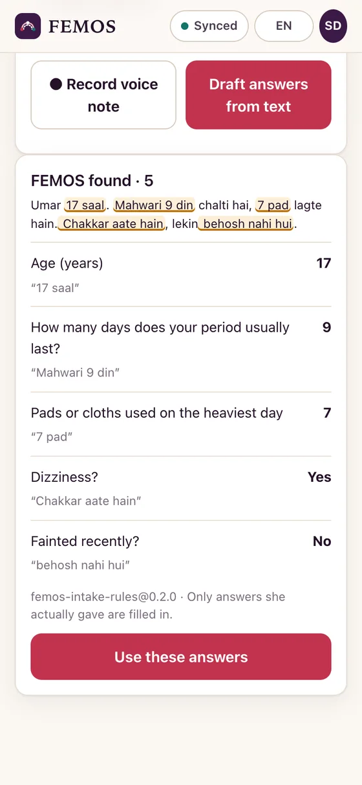
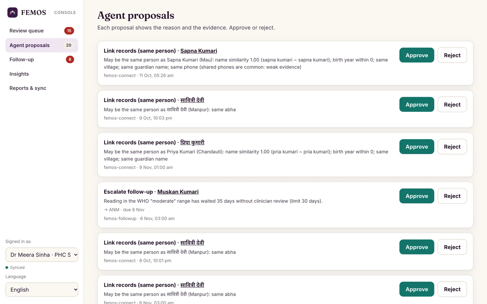
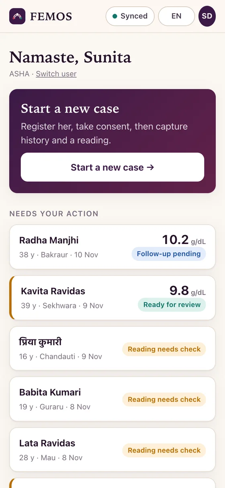
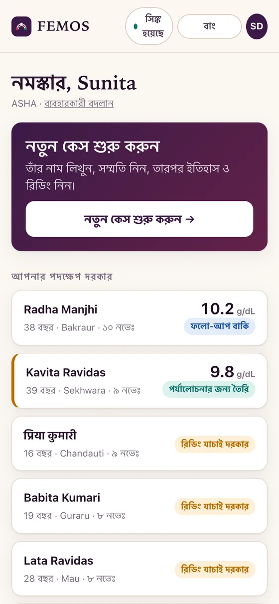
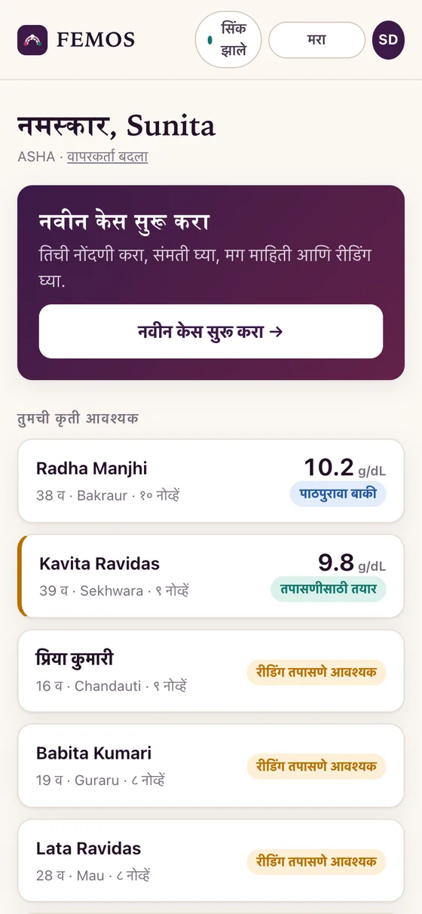
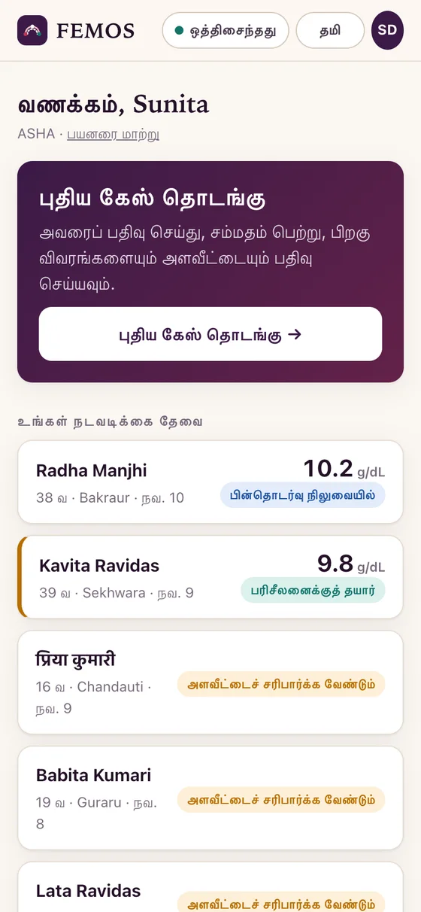
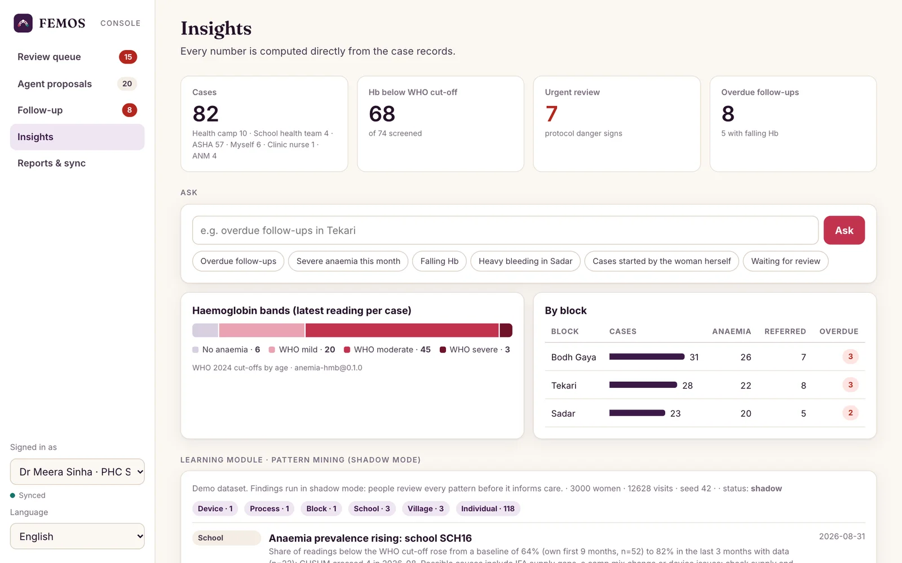
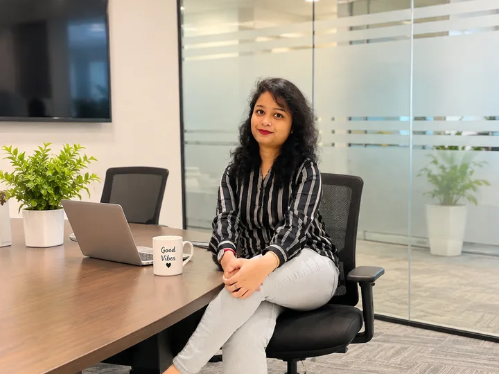
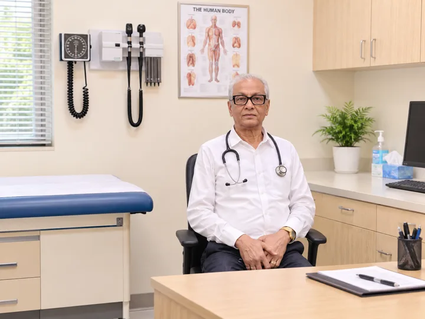
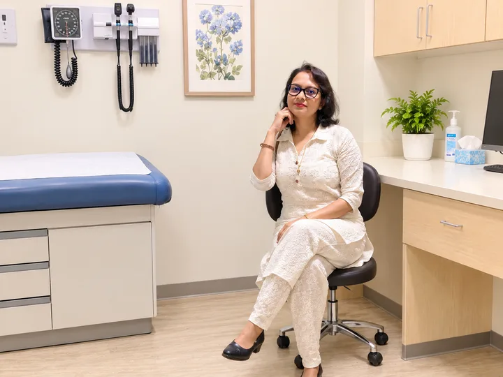

Open source · Works offline · 5 Indian languages
No woman lost between screening and care.
FEMOS connects frontline health workers, the devices they already carry, doctors and government health systems, offline and in her language. AI agents do the paperwork. People make the decisions.
- FHIR R4
- DHIS2
- OpenSRP
- RapidPro
- ABHA
78/78
record errors caught before they reach a doctor
6
AI agents working alongside every health worker
130 days
median early warning before haemoglobin turns severe
5
Indian languages and 3 scripts, at every level
How it works
From her doorstep to the doctor, and back.
-

1Capture, in her words
Any health worker, or the woman herself, records her history in any of five languages. A photo of the meter becomes a verified reading. FEMOS drafts; the worker confirms.
-
2
Review in thirty seconds
The doctor sees a priority queue and a one-page summary where every line links to its source and every warning cites WHO or national guidance. One click to refer.
-

3Follow up until it closes
Agents track every referral, propose escalations and draft discreet reminders in her language. Records flow to FHIR, OpenSRP and DHIS2 automatically.
Product
AI agents handle the paperwork. People make the decisions, faster.
- ✦
Six bounded agents
Intake, checks, handoff, follow-up, interoperability and supervision. They propose; a person approves.
- ✓
Errors caught at the source
Unit mix-ups, decimal slips, contradictions, duplicates across scripts and reused photos, flagged before they reach a record.
- ⇅
Offline first
Capture, checks and handoff run on the phone. Everything syncs safely when there is a signal.
- अ
Her language, her words
Hindi, Bengali, Marathi, Tamil and English, in native script, romanised or mixed. Her original words always stay with the record.
- ◎
Early detection
One record per woman across every visit reveals falling haemoglobin, stalled referrals and school-level spikes early.
- ⛨
Privacy on shared phones
Neutral messages, guardian consent for adolescents, photos that stay on the device, and an audit trail for every action.
Languages
The same app, in the language she speaks.
Every screen, question, summary and message, in five languages. A case recorded in Tamil reads correctly for a doctor who reads Bengali.




Early detection
See the decline before it becomes an emergency.
FEMOS follows each woman across home visits, school camps and clinics. Its learning module spots patterns no single visit shows, and brings them to the right person early.
- Falling haemoglobin across visits
- Anaemia rising in a school or village
- Referrals stalling in a block
- A device model producing unreadable screens

The FEMOS Kit
Works with the devices clinics already use.
Haemoglobin meters, BP monitors, glucometers and lab reports, read by camera, Bluetooth, lab file or double-checked entry. The FEMOS Kit adds a phone app and a one-page setup card.
Device compatibility →- HemoCue Hb 201+
- HemoCue Hb 301
- ACON Mission Hb
- Wrig TrueHb
- Bioptik EasyTouch GCHb
- Omron BP monitors
- Roche Accu-Chek
- Lab CBC reports
Team
The people behind FEMOS.
Technology leadership from Empathy AI, with practising doctors who serve communities in and around Kolkata.
-

Ankita Paul
Director & CEO, Empathy AI Pvt Ltd
MBA and BS in Computer Science. Over three years of consulting in deep tech, energy tech, ESG and analytics. Leads responsible AI adoption, partnerships and growth at Empathy AI.
LinkedIn ↗ -

Dr. Milon Kanti Paul
DMS, MD (HOM)
- President, Doctor's Club, Birati, North Dumdum
- Ex-President, HMAI (The Homoeopathic Medical Association of India), North 24 Parganas
- President, HMAI, Birati–Madhyamgram unit
- President, Nationalist Doctors' Organization, North Dumdum, Birati
-

Dr. Aditi Paul
Homoeopathic Medical Officer
In collaboration with
- Purulia–Andra Rural Health Development
- Birati Doctor's Club, Kolkata
- Dumdum Municipal Corporation Health Centre
See FEMOS working.
Open the field app on your phone, or the clinician console on your laptop. Sample cases are loaded.